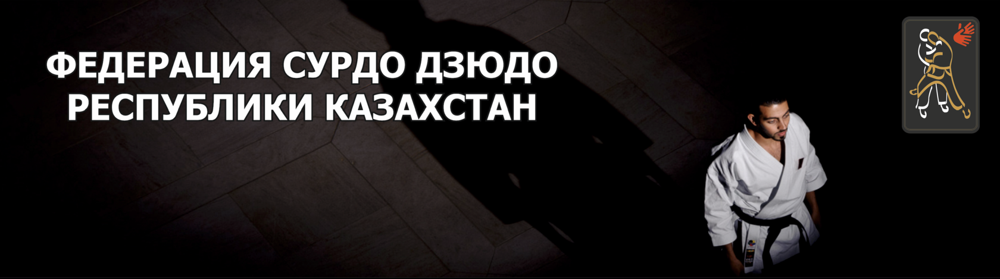

The 25th Summer Deaflympics
Tokyo 2025
- 5 gold medals
- 2 silver medals
- 4 bronze medals

The national federation develops deaf judo in Kazakhstan and supports athletes' participation in national and international competitions.
About
The Judo Federation of Deaf Athletes of Kazakhstan was established in 2023. Its priorities are strong international sporting results and the education of physically strong, well-rounded young people.
The federation continues its work to develop deaf judo in the country and promote this sport among deaf and hard-of-hearing athletes.
Achievements
Tokyo 2025
Kuala Lumpur 2024
Turkestan, Kazakhstan
World Championship
Partners